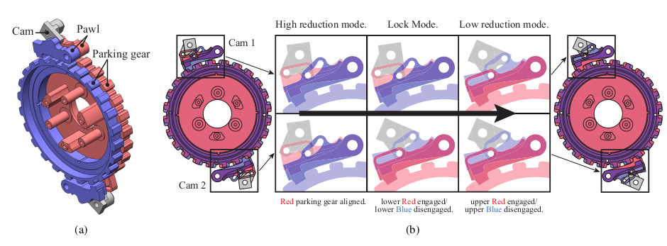

{{ page.title }}
IEEE/RSJ International Conference on Intelligent Robots and Systems (IROS), 2022
Tae-Gyu Song (1) Young-Ha Shin (1) Seungwoo Hong (1) Hyungho Chirs Choi (1) Joon-Ha Kim (1) Hae-won Park (1)
(1) Korea Advanced Institute of Science and Technology

|
Abstract
This paper presents a reduction mechanism for
robot actuators that can switch between two types of reduction
ratio. By fixing the carrier or ring gear of the proposed actuator
which is based on the 3K compound planetary drive, the
actuator can shift its reduction ratio. For compact design with
reduced weight of the actuator, unique pawl brake mecha-
nism interacting with cams and micro servos for switching
mechanism is designed. The resulting prototype module has
a reduction ratio of 6.91 and 44.93 for ‘low-reduction’ and
‘high-reduction’ ratios, respectively. Reduction ratios can be
easily adjusted by modifying the pitch diameters of gears.
Experimental results demonstrate that the proposed actuator
could extend its operation region via two reduction modes that
are interchangeable with gear shifting.
|
Paper: [TODO]
|
Video
TODO
Bibtex
TODO